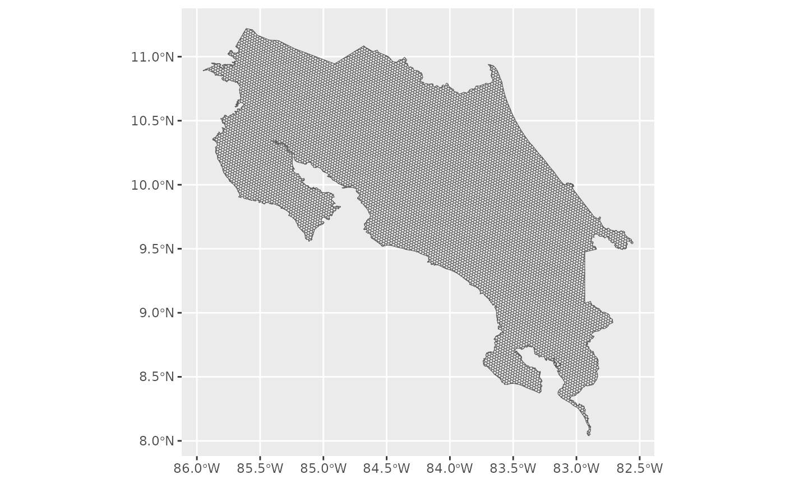
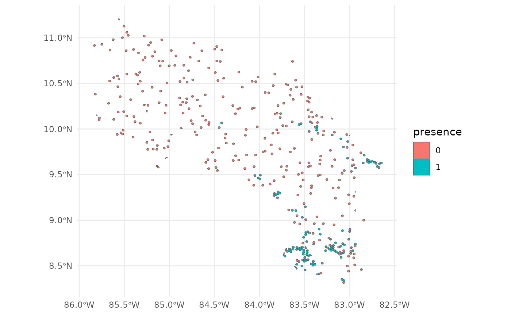
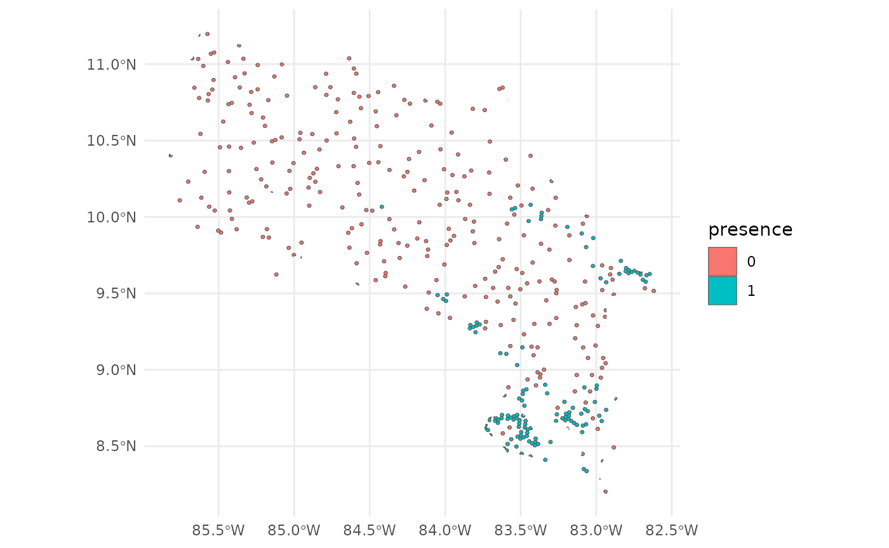
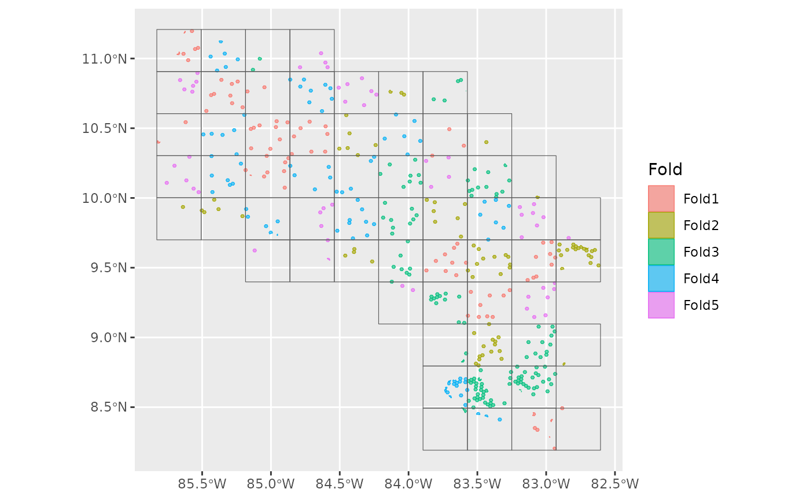
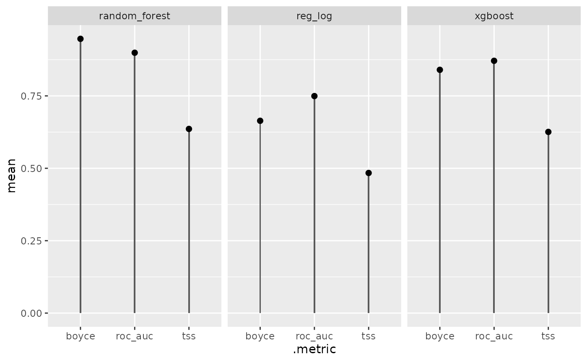
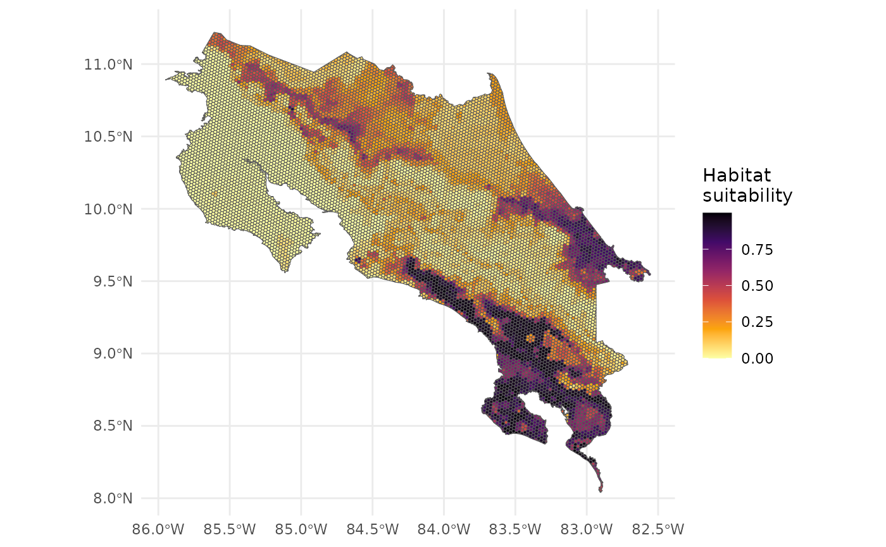
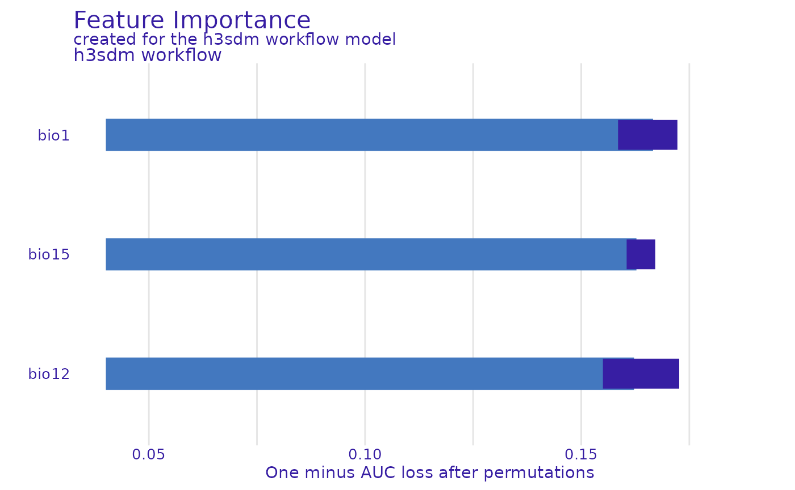
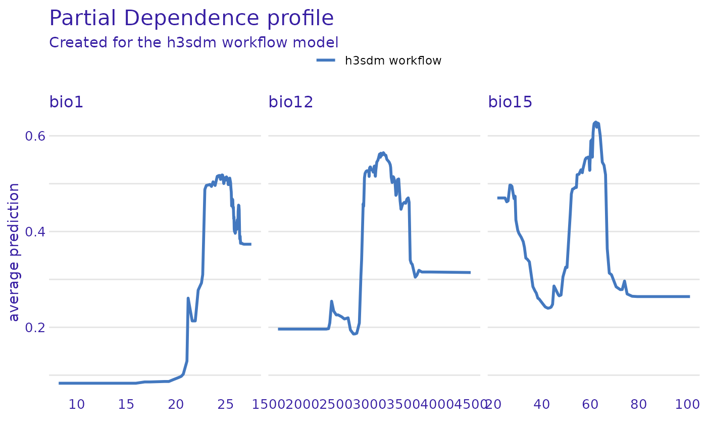

h3sdm workflow for multiple models
Manuel Spínola
Source:vignettes/articles/multi_model_workflow.Rmd
multi_model_workflow.RmdIntroduction
This vignette demonstrates a complete SDM workflow for a single
species using multiple model types with h3sdm. We cover
data preparation with a hexagonal grid, environmentally stratified
pseudo-absence generation, model fitting with spatial cross-validation,
performance comparison, predictions, and variable importance
analysis.
1. Define the Area of Interest
We start by defining the geographical area for modeling. Here we use
Costa Rica as an example. The file is included in the h3sdm
package.
cr <- cr_outline_c2. Load Environmental Predictors
We use WorldClim historic bioclimatic variables for Costa Rica as
environmental predictors. The data is included in the h3sdm
package.
bio <- terra::rast(system.file("extdata", "bioclim_current.tif", package = "h3sdm"))
names(bio) <- gsub(".*bio_", "bio", names(bio))3. Create the Hexagonal Grid
The hexagonal grid is the backbone of the h3sdm
workflow. All subsequent steps — predictor extraction, presence
assignment, and pseudo-absence generation — are built on top of it. At
resolution 7, each hexagon covers approximately 514 ha, which is
appropriate for many vertebrate species.
h7 <- h3sdm_get_grid(cr, res = 7)
4. Prepare Predictors
Environmental variables are extracted for every hexagon in the grid. Here we use three WorldClim bioclimatic variables: Bio1 (Annual Mean Temperature), Bio12 (Annual Precipitation), and Bio15 (Precipitation Seasonality).
bio_predictors <- h3sdm_extract_num(bio, h7)
#> | | | 0% | | | 1% | |= | 1% | |= | 2% | |== | 2% | |== | 3% | |== | 4% | |=== | 4% | |=== | 5% | |=== | 6% | |==== | 6% | |==== | 7% | |===== | 7% | |===== | 8% | |===== | 9% | |====== | 9% | |====== | 10% | |====== | 11% | |======= | 11% | |======= | 12% | |======== | 12% | |======== | 13% | |======== | 14% | |========= | 14% | |========= | 15% | |========= | 16% | |========== | 16% | |========== | 17% | |=========== | 17% | |=========== | 18% | |=========== | 19% | |============ | 19% | |============ | 20% | |============= | 20% | |============= | 21% | |============= | 22% | |============== | 22% | |============== | 23% | |============== | 24% | |=============== | 24% | |=============== | 25% | |================ | 25% | |================ | 26% | |================ | 27% | |================= | 27% | |================= | 28% | |================= | 29% | |================== | 29% | |================== | 30% | |=================== | 30% | |=================== | 31% | |=================== | 32% | |==================== | 32% | |==================== | 33% | |==================== | 34% | |===================== | 34% | |===================== | 35% | |====================== | 35% | |====================== | 36% | |====================== | 37% | |======================= | 37% | |======================= | 38% | |======================= | 39% | |======================== | 39% | |======================== | 40% | |========================= | 40% | |========================= | 41% | |========================= | 42% | |========================== | 42% | |========================== | 43% | |=========================== | 43% | |=========================== | 44% | |=========================== | 45% | |============================ | 45% | |============================ | 46% | |============================ | 47% | |============================= | 47% | |============================= | 48% | |============================== | 48% | |============================== | 49% | |============================== | 50% | |=============================== | 50% | |=============================== | 51% | |=============================== | 52% | |================================ | 52% | |================================ | 53% | |================================= | 53% | |================================= | 54% | |================================= | 55% | |================================== | 55% | |================================== | 56% | |================================== | 57% | |=================================== | 57% | |=================================== | 58% | |==================================== | 58% | |==================================== | 59% | |==================================== | 60% | |===================================== | 60% | |===================================== | 61% | |====================================== | 61% | |====================================== | 62% | |====================================== | 63% | |======================================= | 63% | |======================================= | 64% | |======================================= | 65% | |======================================== | 65% | |======================================== | 66% | |========================================= | 66% | |========================================= | 67% | |========================================= | 68% | |========================================== | 68% | |========================================== | 69% | |========================================== | 70% | |=========================================== | 70% | |=========================================== | 71% | |============================================ | 71% | |============================================ | 72% | |============================================ | 73% | |============================================= | 73% | |============================================= | 74% | |============================================= | 75% | |============================================== | 75% | |============================================== | 76% | |=============================================== | 76% | |=============================================== | 77% | |=============================================== | 78% | |================================================ | 78% | |================================================ | 79% | |================================================ | 80% | |================================================= | 80% | |================================================= | 81% | |================================================== | 81% | |================================================== | 82% | |================================================== | 83% | |=================================================== | 83% | |=================================================== | 84% | |==================================================== | 84% | |==================================================== | 85% | |==================================================== | 86% | |===================================================== | 86% | |===================================================== | 87% | |===================================================== | 88% | |====================================================== | 88% | |====================================================== | 89% | |======================================================= | 89% | |======================================================= | 90% | |======================================================= | 91% | |======================================================== | 91% | |======================================================== | 92% | |======================================================== | 93% | |========================================================= | 93% | |========================================================= | 94% | |========================================================== | 94% | |========================================================== | 95% | |========================================================== | 96% | |=========================================================== | 96% | |=========================================================== | 97% | |=========================================================== | 98% | |============================================================ | 98% | |============================================================ | 99% | |=============================================================| 99% | |=============================================================| 100%
predictors <- h3sdm_predictors(bio_predictors) |>
dplyr::select(h3_address, bio1, bio12, bio15, geometry)We can visualize one of the predictors, for example Bio1.
ggplot() +
theme_minimal() +
geom_sf(data = predictors, aes(fill = bio1)) +
scale_fill_viridis_c(option = "B")
5. Species Occurrence Data
Presence hexagons are generated using h3sdm_pres(),
which downloads occurrence records and assigns them to hexagons.
Multiple records within the same hexagon are consolidated into a single
presence, reducing spatial sampling bias. Since each hexagon represents
an area (~514 ha at resolution 7), this better reflects how organisms
actually occupy space.
Pseudo-absences are then generated with h3sdm_pa(). They
are placed outside the known distribution — excluding hexagons with
presences and their immediate neighbors (buffer_k = 1) —
and selected using k-means clustering in environmental space. This
ensures pseudo-absences represent the full range of environmental
conditions available in the study area. Since there are approximately
100 presence hexagons at resolution 7, we request 300 pseudo-absences
(3×).
pres <- h3sdm_pres("Silverstoneia flotator", cr, res = 7, limit = 10000)
records <- h3sdm_pa(pres, predictors, n_pseudoabs = 300)
head(records)
#> Simple feature collection with 6 features and 2 fields
#> Geometry type: MULTIPOLYGON
#> Dimension: XY
#> Bounding box: xmin: -84.06344 ymin: 8.486587 xmax: -82.77295 ymax: 9.643344
#> Geodetic CRS: WGS 84
#> h3_address presence geometry
#> 43 8766b4415ffffff 1 MULTIPOLYGON (((-84.05549 9...
#> 165 87679b636ffffff 1 MULTIPOLYGON (((-82.79149 9...
#> 198 8766b54d3ffffff 1 MULTIPOLYGON (((-83.18895 8...
#> 427 87679b78effffff 1 MULTIPOLYGON (((-82.85228 9...
#> 796 8766b0135ffffff 1 MULTIPOLYGON (((-83.71366 8...
#> 893 8766b014cffffff 1 MULTIPOLYGON (((-83.53362 8...
table(records$presence)
#>
#> 0 1
#> 300 129
ggplot() +
theme_minimal() +
geom_sf(data = records, aes(fill = presence))
6. Combine Records and Predictors
Merge species occurrence records with environmental predictors.
dat <- h3sdm_data(records, predictors)7. Spatial Cross-Validation
Define spatial blocks for cross-validation to account for spatial autocorrelation.
scv <- h3sdm_spatial_cv(dat, v = 5, repeats = 1)
autoplot(scv)
8. Define Recipe and Models
Create a modeling recipe and specify multiple classification models.
We start with presence–absence data aggregated in hexagonal cells. The
dataset is imbalanced — approximately 100 presence hexagons and 300
pseudo-absence hexagons — which can bias models toward predicting
absences. We use step_downsample(presence) from the
themis package to correct for this. After down-sampling,
the dataset is balanced, improving model training and evaluation while
retaining all presence information.
receta <- h3sdm_recipe(dat) |>
themis::step_downsample(presence) |>
step_dummy(all_nominal_predictors())Now we define multiple models using the parsnip package
from the tidymodels framework.
mod_log <- logistic_reg() %>%
set_engine("glm") %>%
set_mode("classification")
mod_rf <- rand_forest() %>%
set_engine("ranger") %>%
set_mode("classification")
mod_xgb <- boost_tree() %>%
set_engine("xgboost") %>%
set_mode("classification")
my_models <- list(
reg_log = mod_log,
random_forest = mod_rf,
xgboost = mod_xgb
)9. Create Workflows
wfs <- h3sdm_workflows(my_models, receta)
wfs
#> $reg_log
#> ══ Workflow ═══════════════════════════════════════════════════════════
#> Preprocessor: Recipe
#> Model: logistic_reg()
#>
#> ── Preprocessor ───────────────────────────────────────────────────────
#> 2 Recipe Steps
#>
#> • step_downsample()
#> • step_dummy()
#>
#> ── Model ──────────────────────────────────────────────────────────────
#> Logistic Regression Model Specification (classification)
#>
#> Computational engine: glm
#>
#>
#> $random_forest
#> ══ Workflow ═══════════════════════════════════════════════════════════
#> Preprocessor: Recipe
#> Model: rand_forest()
#>
#> ── Preprocessor ───────────────────────────────────────────────────────
#> 2 Recipe Steps
#>
#> • step_downsample()
#> • step_dummy()
#>
#> ── Model ──────────────────────────────────────────────────────────────
#> Random Forest Model Specification (classification)
#>
#> Computational engine: ranger
#>
#>
#> $xgboost
#> ══ Workflow ═══════════════════════════════════════════════════════════
#> Preprocessor: Recipe
#> Model: boost_tree()
#>
#> ── Preprocessor ───────────────────────────────────────────────────────
#> 2 Recipe Steps
#>
#> • step_downsample()
#> • step_dummy()
#>
#> ── Model ──────────────────────────────────────────────────────────────
#> Boosted Tree Model Specification (classification)
#>
#> Computational engine: xgboost10. Fit the Models
Before fitting, we extract the presence data from the dataset. This ensures that metrics, cross-validation, and evaluation focus correctly on the locations where the species is actually present.
We fit the models using the spatial cross-validation scheme. Spatial CV accounts for spatial autocorrelation by partitioning the data into spatially distinct folds, providing a more realistic assessment of model performance compared to random CV.
several <- h3sdm_fit_models(wfs, scv, presence_data)11. Evaluate and Compare Models
compare <- h3sdm_compare_models(several)
compare
#> # A tibble: 9 × 7
#> model .metric .estimator mean std_err conf_low conf_high
#> <chr> <chr> <chr> <dbl> <dbl> <dbl> <dbl>
#> 1 random_forest boyce binary 0.955 NA NA NA
#> 2 random_forest roc_auc binary 0.898 0.0259 0.847 0.949
#> 3 xgboost roc_auc binary 0.878 0.0326 0.814 0.942
#> 4 xgboost boyce binary 0.814 NA NA NA
#> 5 reg_log roc_auc binary 0.750 0.0353 0.681 0.819
#> 6 reg_log boyce binary 0.655 NA NA NA
#> 7 random_forest tss binary 0.635 NA NA NA
#> 8 xgboost tss binary 0.628 NA NA NA
#> 9 reg_log tss binary 0.483 NA NA NAThree metrics are reported:
-
ROC AUC (
roc_auc) — evaluates the model’s ability to discriminate between presence and pseudo-absence regardless of threshold. It is the standard metric for probabilistic classification. -
Maximum TSS (
tss_max) — combines sensitivity and specificity into a single threshold-dependent value, showing how well the model predicts presences and absences simultaneously. -
Boyce index (
boyce) — measures the model’s ability to predict species distribution continuously and assesses whether areas with higher predicted values coincide with observed presences.
ggplot(compare, aes(.metric, mean)) +
geom_col(width = 0.03) +
geom_point(size = 2) +
facet_wrap(~model)
12. Select the Best Model and Make Predictions
p_rf <- h3sdm_predict(several$models$random_forest, predictors)
p_rf
#> Simple feature collection with 10417 features and 7 fields
#> Geometry type: MULTIPOLYGON
#> Dimension: XY
#> Bounding box: xmin: -85.95025 ymin: 8.039627 xmax: -82.55232 ymax: 11.21976
#> Geodetic CRS: WGS 84
#> First 10 features:
#> h3_address bio1 bio12 bio15
#> 1 876d6854dffffff 26.61501 1632.814 94.14928
#> 2 876d6bb8effffff 26.62722 2215.888 92.49077
#> 3 87679b4f5ffffff 25.08632 3023.892 26.03154
#> 4 8766b5d82ffffff 13.71321 3982.812 37.47940
#> 5 8766b4528ffffff 15.85883 2214.000 75.75454
#> 6 876d68adaffffff 23.29059 2412.908 69.25448
#> 7 876d6d625ffffff 26.03058 3024.874 47.24875
#> 8 876d6878affffff 26.30600 1746.000 91.93986
#> 9 8766b4ab5ffffff 20.26178 2883.596 41.66865
#> 10 876d69c94ffffff 22.67291 2361.003 70.83282
#> geometry x y prediction
#> 1 MULTIPOLYGON (((-85.61874 1... -85.61355 10.744993 0.0006190476
#> 2 MULTIPOLYGON (((-85.2204 9.... -85.21517 9.805806 0.0006190476
#> 3 MULTIPOLYGON (((-83.01133 9... -83.00602 9.806921 0.7546976190
#> 4 MULTIPOLYGON (((-83.07362 9... -83.06830 9.295924 0.0074730159
#> 5 MULTIPOLYGON (((-83.93635 9... -83.93107 9.638151 0.0324634921
#> 6 MULTIPOLYGON (((-85.04019 1... -85.03497 10.579597 0.1988706349
#> 7 MULTIPOLYGON (((-84.50184 1... -84.49660 10.874768 0.2106690476
#> 8 MULTIPOLYGON (((-85.69967 1... -85.69448 10.433590 0.0034000000
#> 9 MULTIPOLYGON (((-83.32541 9... -83.32010 9.539664 0.0379730159
#> 10 MULTIPOLYGON (((-84.94068 1... -84.93545 10.420003 0.102209523813. Map
ggplot() +
theme_minimal() +
geom_sf(data = p_rf, aes(fill = prediction)) +
scale_fill_viridis_c(name = "Habitat \nsuitability", option = "B", direction = -1)
The map represents habitat suitability across hexagons. Values between 0 and 1 indicate the probability of the species being present in each hexagon. Higher values indicate more suitable habitat; lower values indicate less suitable habitat.
14. Model Interpretation: Feature Importance and Partial Dependence
We interpret the model to understand which predictors are most influential and how they affect predictions. First, we extract the fitted random forest model.
rf_fitted <- several$models$random_forest$final_modelThen we create an explainer object using the DALEX package.
e <- h3sdm_explain(rf_fitted, data = dat)
#> Preparation of a new explainer is initiated
#> -> model label : h3sdm workflow
#> -> data : 429 rows 6 cols
#> -> target variable : 429 values
#> -> predict function : custom_predict
#> -> predicted values : No value for predict function target column. ( default )
#> -> model_info : package tidymodels , ver. 1.5.0 , task classification ( default )
#> -> predicted values : numerical, min = 0.0002857143 , mean = 0.4038116 , max = 0.9994
#> -> residual function : difference between y and yhat ( default )
#> -> residuals : numerical, min = -0.9884302 , mean = -0.1031123 , max = 0.643777
#> A new explainer has been created!Feature Importance
We evaluate the importance of each predictor variable using permutation importance. This method assesses how much model performance decreases when the values of a predictor are randomly shuffled.
var_imp <- model_parts(
explainer = e,
variables = predictors_to_evaluate
)
plot(var_imp)
Partial Dependence Plots
Partial dependence plots (PDPs) show how the predicted outcome changes as a single predictor varies, while averaging out the effects of all other predictors.
pdp_rf <- partial_dependence(e, variables = c("bio12", "bio1", "bio15"))
plot(pdp_rf)
Conclusions
This vignette demonstrated a complete SDM workflow for multiple
models using h3sdm. The key steps included defining the
study area, creating the hexagonal grid, preparing environmental
predictors, generating presence hexagons and environmentally stratified
pseudo-absences, fitting multiple models with spatial cross-validation,
comparing performance, making predictions, and assessing variable
importance. This workflow can be adapted to any species and study area
by adjusting the resolution, the number of pseudo-absences, and the set
of environmental predictors.